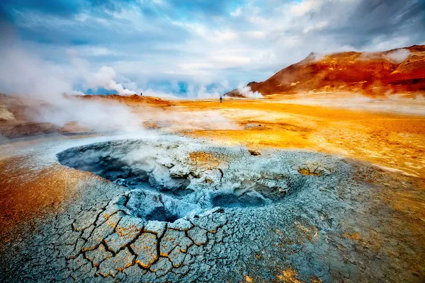
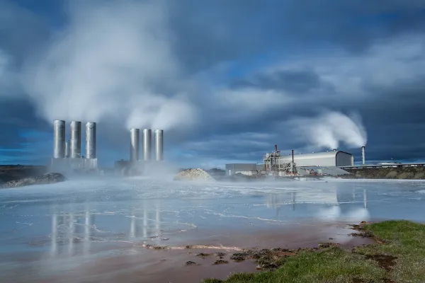
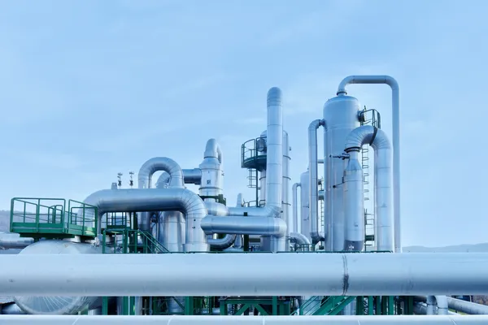

A energia geotérmica assim como as outras citadas anteriormente é uma fonte renovável, só que ela é a energia térmica gerada e armazenada na terra.Essa energia é obtida diretamente do calor interno da terra e é transformada em eletricidade de um modo sustentável em usinas geotérmicas.
Hverir - google imagem
Para entendermos como funciona essa energia, primeiramente devemos lembrar de como funciona as camadas do planeta terra. O planeta terra é composto por diversas camadas, sendo a camada superior a crosta terrestre, composta por rochas, e logo abaixo o manto terrestre, que contém magma, um material líquido e pastoso devido às altas temperaturas. Nessas regiões onde o calor emerge, ocorrem fenômenos como gêiseres de vapor e nascentes de água quente, indicando a presença de energia geotérmica próxima à superfície.
Esse calor pode ser aproveitado por meio de usinas geotérmicas, que capturam o vapor ou a água quente para gerar eletricidade de maneira sustentável.
Essa água quente e vapor são então utilizados para gerar eletricidade de forma direta ou indireta:
Direta: O vapor é separado da mistura água-vapor utilizando um dispositivo chamado separador ciclônico. Este dispositivo separa o vapor da água líquida e direciona o vapor para alimentar as turbinas que, por sua vez, acionam os geradores para produzir eletricidade.
Indireta:Na abordagem indireta, um trocador de calor é utilizado. Nesse caso, o vapor ou a água quente é transferido para um sistema de troca de calor, onde é usado para aquecer um fluido de trabalho secundário, como um fluido orgânico de baixo ponto de ebulição. Esse fluido secundário evapora devido ao calor recebido e aciona as turbinas, gerando eletricidade.
Ambas as abordagens são eficazes para converter a energia geotérmica em eletricidade e são utilizadas em usinas geotérmicas ao redor do mundo, dependendo das características específicas do local e dos recursos disponíveis.
Google - Image
No Brasil, a maioria das fontes geotérmicas estão localizadas em áreas que contam com bacias sedimentares e são pouco exploradas Enquanto o Brasil pode não ter o potencial geotérmico encontrado em áreas de encontro entre placas tectônicas Mas ainda assim podem ser usadas para fins de lazer, isso pode incluir resorts e spas termais, por exemplo. Diferentemente de outras fontes de energia renovável que tem uma importância maior na matris energética brasileira, como hidrelétrica, solar e eólica.
INT energy - Google imagem
São Paulo, 13 de Maio de 2024